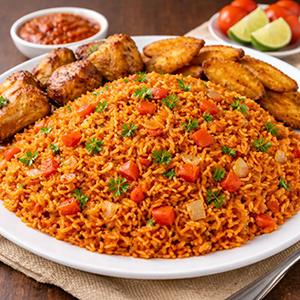

Home
Jollof Rice

Description
Jollof rice is a popular West African dish made with rice, tomatoes, peppers, onions, and a blend of spices. It's rich, flavourful, colourful and loved by many.
This recipe gives you the classic Nigerian-style jollof rice with a tasty, slightly smoky flavour. You can enjoy it on its own or with fried plantain, chicken, beef or fish.
Ingredients
- 3 cups long-grain rice (washed and drained)
- 6 medium tomatoes (or 2 cups blended tomato)
- 4 red bell peppers (or 2 large red peppers)
- 2–3 scotch bonnet/habanero peppers (optional, for heat)
- 2 large onions (1 blended, 1 sliced)
- 4 cloves garlic
- 1 thumb-sized ginger
- ¼ cup tomato paste
- ½ cup vegetable oil (or any cooking oil)
- 2 cubes beef/chicken stock (or 1 tablespoon salt)
- 1 teaspoon thyme
- 1 teaspoon curry powder (optional)
- 1 teaspoon paprika (optional, for colour)
- 1 bay leaf (optional)
- Salt to taste
Steps
- Blend the tomatoes, red bell peppers, scotch bonnet peppers (if using), 1 onion, garlic and ginger until smooth.
- Heat ½ cup of oil in a large pot. Pour in the blended mixture and cook on medium heat for about 10–15 minutes, stirring occasionally, until the sauce reduces and thickens. Add the tomato paste, thyme, curry powder, paprika, stock cubes (or salt) and bay leaf. Stir and let it cook for another 5 minutes.
- Pour in the washed and drained rice. Stir well so the rice is evenly coated with the sauce. Add 3 cups of water, or enough to cover the rice by about 1–2 cm.
- Bring to a boil, then reduce the heat to low. Cover the pot and let it cook for 20–25 minutes, stirring occasionally to prevent sticking. Check the water level; if it dries up and the rice is not yet soft, add a little more water and continue cooking.
- When the rice is tender and the water is almost gone, remove it from the heat and let it rest for 5 minutes. Fluff with a fork and serve hot with fried plantain, chicken, beef or fish.